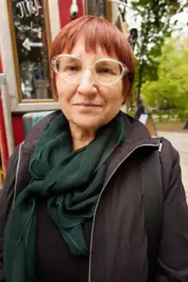

Катерина Перелісна (Глянько-Попова) – українська письменниця, авторка численних творів для дітей. Народилася 2 грудня 1902 року в місті Харкові.
У родині Гляньків було четверо дітей – Федько, Валик, Мілі та Катруся. Щоб їх прогодувати, батько Федір Хомич тяжко працював, займаючись громадською діяльністю: належав до Центральної Ради і Трудового конгресу, брав участь у виданні українських книжок, у відновленні товариства "Просвіта", а ще був актором-аматором і адміністратором театру Гната Хоткевича, сприяв заснуванню української гімназії імені Бориса Грінченка, де згодом навчалася його донечка Катруся.
Дружина всіляко підтримувала чоловіка. Вона доглядала за дітьми, у вільний час шила костюми для театру. А ще мала чарівний голос і співала так чудово, що всі заслуховувалися її співом. Родина, в якій росла Катруся, була дружною, бабуся Дарина розповідала онукам казки, їхня невеличка оселя перетворювалася на світ, де казкували Котигорошко і Кривенька Качечка, де правда перемагала кривду, а зло відступало в безвість перед добром. З п'яти років Катруся розпочала своє театральне життя – грала мовчазні ролі. В той час їй страшенно хотілося бути справжньою актрисою. Та батько нізащо не хотів брати до театру неписьменну актрису, і Катруся з шести років вчилася читати по віршах Т.Г. Шевченка. У родині шанували традиції: діти разом із батьками ходили колядувати, щедрувати, віншувати на Новорічні свята; плели вінки і стрибали через вогонь на Івана Купала; розписували писанки на Великдень; збирали зілля на Зелені свята. Коли Катруся пішла у школу, в родині трапилася біда: усі діти захворіли на скарлатину, вижила тільки одна Катруся. Після закінчення школи Катерина Глянько навчалася у російській гімназії, згодом перейшла до новозаснованої української гімназії імені Бориса Грінченка. Ще за навчання стала редактором шкільного журналу, де друкувалися твори гімназистів. Після гімназії Катерина Перелісна закінчила Інститут народної освіти (нині Харківський університет), працювала у дитячих садочках із найменшими дітками. Для них вона писала казки, віршики, сценки. А ще вона редагувала українські книжки. До творчості вона підійшла з душевним трепетом, з усією серйозністю обмірковувала кожен задум, відточуючи раз за разом свою майстерність. Перші віршики та оповідання Катерини Перелісної були надруковані в журналі для дітей "Червоні квіти", який виходив у Харкові. Разом зі своїм чоловіком, професором Олександром Поповим, опікувалася українськими школами, видавала українські книжки для дітей – Тараса Шевченка, Бориса Грінченка, Івана Франка, Лесі Українки. Її твори друкуються у харківських журналах і газетах, а пригодницький роман для дітей "Від Калькутти до Шанхая" було прийнято до друку "як твір українського Жуля Верна". Та надійшли трагічні 30-ті роки. За любов до України було піддано репресіям багато українців. У цей час понад 60 письменників писало твори для дітей, вони один за одним зазнали утисків від влади, а деякі опинилися у в'язницях і таборах смерті. Не оминула страшна доля і родину Катерини Перелісної: у в'язницю забрали її чоловіка і батька, а самій письменниці заборонили друкуватися й відсторонили від улюбленої роботи. Роман "Від Калькутти до Шанхая" був повністю знищений. Їй не давали працювати, писати, нищили її скарб – казки та вірші для дітей. Дивом батько і чоловік вибралися із в'язниці. І родина із сином на руках у роки Другої світової війни покинула Україну. Деякий час вони жили у Чехословаччині, потім у Німеччині. У місті Ашаффенбурзі Катерина Перелісна видала читанку для дітей "Євшан-зілля" зі своїми творами, але під різними прізвищами. Їй хотілося показати, як багато письменників пишуть для дітей. Згодом родина перебралася до Америки, де Катерина Перелісна повернулася до вчительської праці й до літературної творчості – писала вірші, казки, оповідання. Активно друкувалася в журналі для дітей "Веселка", що там виходив, видала кілька книжок "Для малят – про звірят" (1952), "Ой, хто там?" (1954), "Три правди" (1967, 1969, 1994); "Котикова пригода" (1972). Її читачами стали діти українців-емігрантів усього вільного світу. Свої твори вона підписувала: М. Донченко, М. Дичка, Л. Кіс, О. Музиківна, Н.П., К.П., П.К., О.М. або Катерина Перелісна. До 90-річчя письменниці видавництво "Наш край", м. Дубно, (бібліотечка журналу "Незабудка") подарувало читачам її книжечку "Метелик в автобусі", упорядковану Галиною Кирпою – відомою дитячою письменницею, перекладачкою, літературним редактором, яка багато зробила для того, щоб показати все розмаїття поетичних імен українського зарубіжжя. Збірка "Скажу на вушко!" (2008) – найбільш повне видання творів для дітей Катерини Перелісної в Україні, була видана саме завдяки Галині Кирпі. Твори Катерини Перелісної навіть покладені на музику, зокрема Українським хором бандуристів та композитором Володимиром Кассарабою. Прикро, що ця видатна українська письменниця доживала віку у притулку для осіб похилого віку поміж чужих людей (син помер раніше). Її не стало 4 листопада 1995 року в Трентоні (штат Нью-Джерсі, США). Катерина Федорівна ще встигла побачити свою книжку "Вірші для дітей", яка вийшла друком в Україні у м. Хмельницькому 1992 року завдяки праці та старанням Галини Грушецької – громадської й освітньої діячки діаспори в США. Катерина Перелісна прожила життя повне болю та невимовних страждань та, не дивлячись на це, залишила по собі напрочуд світлі, добрі й радісні твори для дітей. Нині письменниця відома маленькими читачами і в Україні. Її твори друкуються у різних дитячих періодичних виданнях, в альманахах та хрестоматіях. У її книжках є все – любов до Бога, до Батьківщини, родини, природи. А головне, що через її твори ми відкриваємо таємницю – вміння дивитися й розуміти світ дитячими очима.